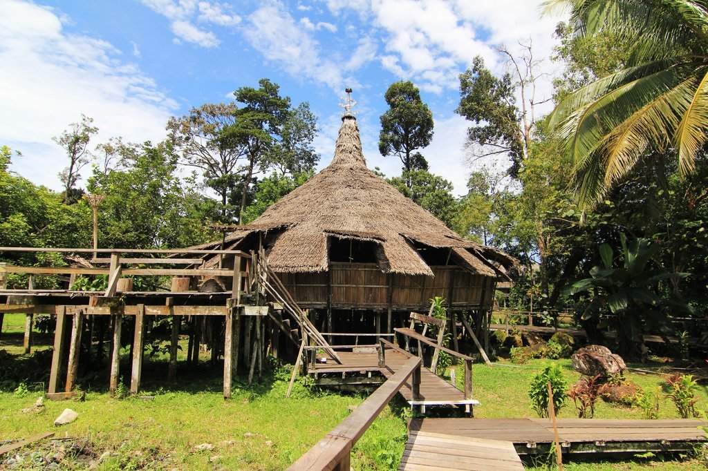
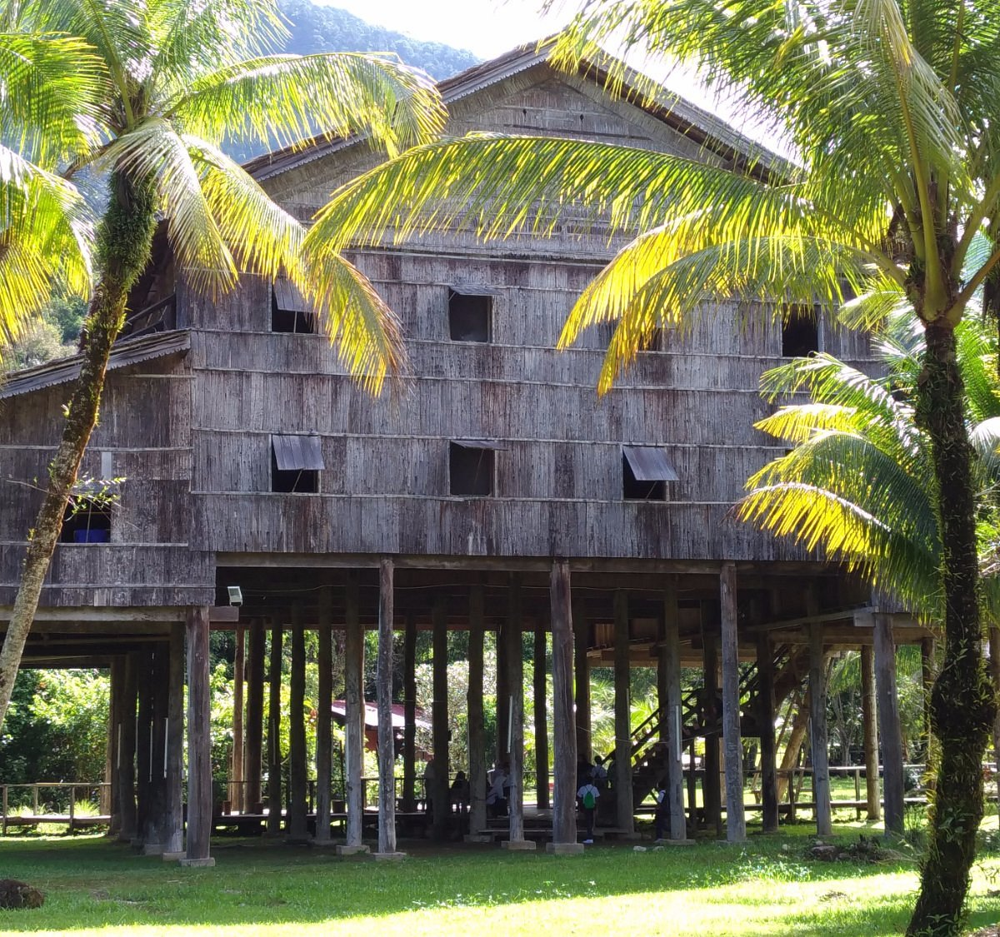
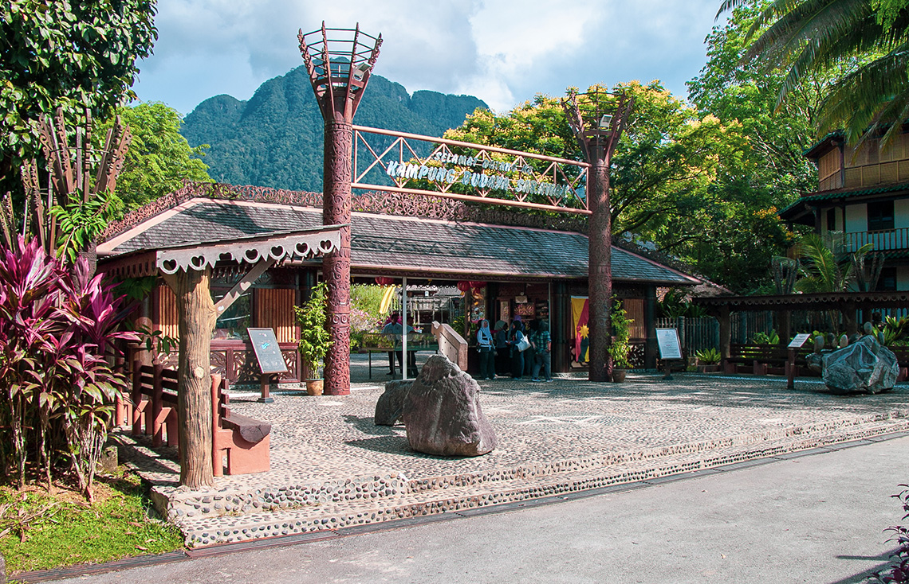

Sarawak Cultural Village
Tour Detail
Pantai Damai, Santubong 93752 Kuching Sarawak
09:00a.m – 04:45p.m.
09:00a.m – 04:45p.m.
Description
The Sarawak Cultural Village is a living museum located in the state of Sarawak, Malaysia, on the island of Borneo. It is situated about 35 kilometers from the capital city of Kuching and offers visitors a unique opportunity to experience the rich cultural heritage and diversity of Sarawak's indigenous peoples.The Sarawak Cultural Village is set amidst a lush tropical rainforest, providing a picturesque backdrop for the various traditional houses and structures representing the different ethnic groups of Sarawak. These include the Bidayuh longhouse, Iban longhouse, Penan hut, Melanau tall house, Orang Ulu longhouse, Malay house, and Chinese farmhouse.
Visitors to the Sarawak Cultural Village can explore these authentic replicas of traditional dwellings, each showcasing the distinctive architecture, craftsmanship, and way of life of the respective ethnic communities. Inside the houses, visitors can observe demonstrations of traditional crafts such as weaving, woodcarving, and beadwork, as well as participate in hands-on activities like cooking traditional dishes or trying on traditional costumes.
In addition to the traditional houses, the Sarawak Cultural Village also features a cultural theater where visitors can enjoy performances of traditional music, dance, and storytelling by talented performers representing the various ethnic groups of Sarawak. These cultural performances offer insight into the rich cultural heritage and traditions of Sarawak's indigenous peoples.
The Sarawak Cultural Village is not only a tourist attraction but also serves as a platform for cultural preservation, education, and promotion of Sarawak's cultural diversity. It offers visitors a fascinating glimpse into the lives and traditions of Sarawak's indigenous communities, making it a must-visit destination for anyone interested in experiencing the authentic culture of Borneo.
Gallery


